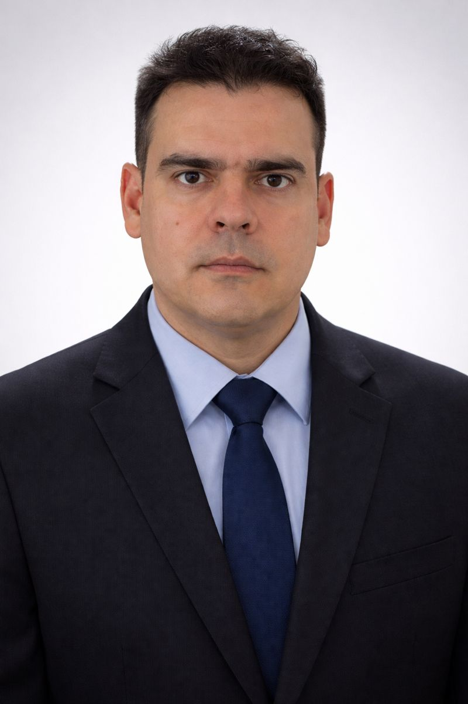

Desenvolvemos soluções inteligentes, treinamentos estratégicos e automações corporativas para empresas que desejam evoluir com eficiência e inovação.

A Fadel Tecnologia nasceu com o propósito de aproximar empresas da inovação através de soluções práticas, eficientes e humanas.
Atuamos no desenvolvimento de sistemas corporativos, integrações inteligentes, automações e treinamentos voltados para resultados reais.
Nosso foco é entender o cenário de cada cliente e criar soluções personalizadas que realmente impactem o dia a dia das empresas.
Relacionamento próximo e soluções alinhadas à realidade de cada cliente.
Sistemas, integrações e automações desenvolvidas de forma personalizada.
Tecnologia aplicada para gerar produtividade, controle e crescimento.

A Fadel Tecnologia nasceu com o propósito de unir tecnologia, desenvolvimento humano e soluções inteligentes para empresas modernas.
Com experiência em tecnologia, treinamentos, automação corporativa e desenvolvimento de soluções empresariais, buscamos criar projetos que gerem produtividade, evolução profissional e resultados reais.
Acreditamos que tecnologia deve simplificar processos, fortalecer pessoas e gerar crescimento sustentável para empresas e profissionais.